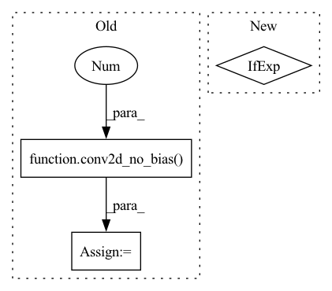

Pattern ID :39021
Before Change
nn = batchnorm_with_activation(nn, activation=activation, zero_gamma=False, name="post_")
if num_features != 0: // efficientnet like
nn = conv2d_no_bias( nn, num_features, 1 , strides=1, name="features_")
nn = batchnorm_with_activation(nn, activation=activation, name="features_")
if num_classes > 0:
nn = keras.layers.GlobalAveragePooling2D(name="avg_pool")(nn)
if drop_rate > 0:
nn = keras.layers.Dropout(drop_rate, name="head_drop")(nn)
nn = keras.layers.Dense(num_classes, dtype="float32", activation=classifier_activation, name="predictions")(nn)After Change
"attn_params": attn_params[id] if isinstance(attn_params, (list, tuple)) else attn_params,
"se_ratio": se_ratio[id] if isinstance(se_ratio, (list, tuple)) else se_ratio,
"use_eca": use_eca[id] if isinstance(use_eca, (list, tuple)) else use_eca,
"groups": groups[id] if isinstance(groups, (list, tuple)) else groups,
}
cur_expansion = expansion[id] if isinstance(expansion, (list, tuple)) else expansion
nn = aot_stack(In pattern: SUPERPATTERN
Frequency: 3
Non-data size: 3
Instances Fragment ID: 111167017
Project Name: leondgarse/keras_cv_attention_models
Commit Name: a6b256994deba19f65ec593111c13c3744960557
Time: 2021-10-13
Author: leondgarse@gmail.com
File Name: keras_cv_attention_models/aotnet/aotnet.py
M Class Name: AnonimousClass
N Class Name: AnonimousClass
M Method Name: AotNet(29)
N Method Name: AotNet(24)
M Parent Class:
N Parent Class:
M File Name: keras_cv_attention_models/aotnet/aotnet.py
N File Name: keras_cv_attention_models/aotnet/aotnet.py
M Start Line: 169
M End Line: 226
N Start Line: 212
N End Line: 271
Before Change
// nn = keras.layers.Activation(activation=activation)(nn)
nn = batchnorm_with_activation(nn, activation=activation, zero_gamma=False, name=name + "halo_")
// round(planes * self.expansion * rb), expansion = 2
nn = conv2d_no_bias( nn, expanded_filter, 1 , name=name + "2_")
nn = batchnorm_with_activation(nn, activation=None, zero_gamma=True, name=name + "2_")
// print(">>>>", nn.shape, shortcut.shape)
nn = keras.layers.Add(name=name + "add")([shortcut, nn])After Change
out_shape = int(filter * halo_expansion)
deep = halo_attention(deep, num_heads, key_dim, block_size, halo_size, strides=strides, out_shape=out_shape, out_weight=False, name=name + "halo_")
else:
groups = 1 if group_size < 1 else filter // group_size
deep = conv2d_no_bias(deep, filter, 3, strides=strides, padding="SAME", groups=groups, name=name + "deep_2_")
// print(">>>>", deep.shape)
deep = batchnorm_with_activation(deep, activation=activation, zero_gamma=False, name=name + "deep_2_") Fragment ID: 111167024
Project Name: leondgarse/keras_cv_attention_models
Commit Name: 05af42a74bfe6c38e41e8155780ac9e3f4864370
Time: 2021-09-30
Author: leondgarse@gmail.com
File Name: keras_cv_attention_models/halonet/halonet.py
M Class Name: AnonimousClass
N Class Name: AnonimousClass
M Method Name: halo_block(15)
N Method Name: halo_block(11)
M Parent Class:
N Parent Class:
M File Name: keras_cv_attention_models/halonet/halonet.py
N File Name: keras_cv_attention_models/halonet/halonet.py
M Start Line: 80
M End Line: 104
N Start Line: 96
N End Line: 137
Before Change
):
inputs = keras.layers.Input(input_shape)
nn = keras.layers.ZeroPadding2D(padding=3, name="stem_conv_pad")(inputs)
nn = conv2d_no_bias( nn, 64, 7 , strides=2, padding="VALID", name="stem_")
nn = batchnorm_with_activation(nn, activation=activation, name="stem_")
nn = keras.layers.ZeroPadding2D(padding=((1, 1), (1, 1)), name="stem_pool_pad")(nn)
nn = keras.layers.MaxPooling2D(3, strides=2, name="stem_pool")(nn)
out_channels = [64, 128, 256, 512]After Change
for id, (num_block, out_channel, stride) in enumerate(zip(num_blocks, out_channels, strides)):
name = "stack{}_".format(id + 1)
survival = None
attn_type = attn_types[id] if isinstance(attn_types, (list, tuple)) else attn_types
nn = cot_stack(nn, num_block, out_channel, stride, expansion, cardinality, attn_type, survival, use_se, activation=activation, name=name)
if num_classes > 0: Fragment ID: 111167030
Project Name: leondgarse/keras_cv_attention_models
Commit Name: 2c93d291c7de9faeaa0341d52b6512ab9546f779
Time: 2021-08-06
Author: leondgarse@gmail.com
File Name: keras_cv_attention_models/cotnet/cotnet.py
M Class Name: AnonimousClass
N Class Name: AnonimousClass
M Method Name: CotNet(14)
N Method Name: CotNet(10)
M Parent Class:
N Parent Class:
M File Name: keras_cv_attention_models/cotnet/cotnet.py
N File Name: keras_cv_attention_models/cotnet/cotnet.py
M Start Line: 190
M End Line: 202
N Start Line: 211
N End Line: 234